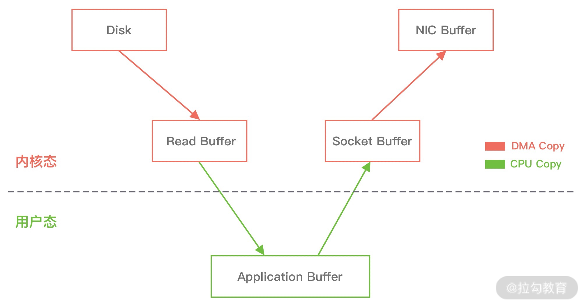
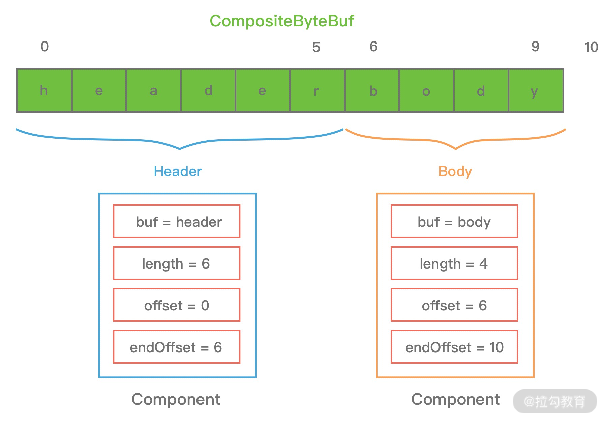
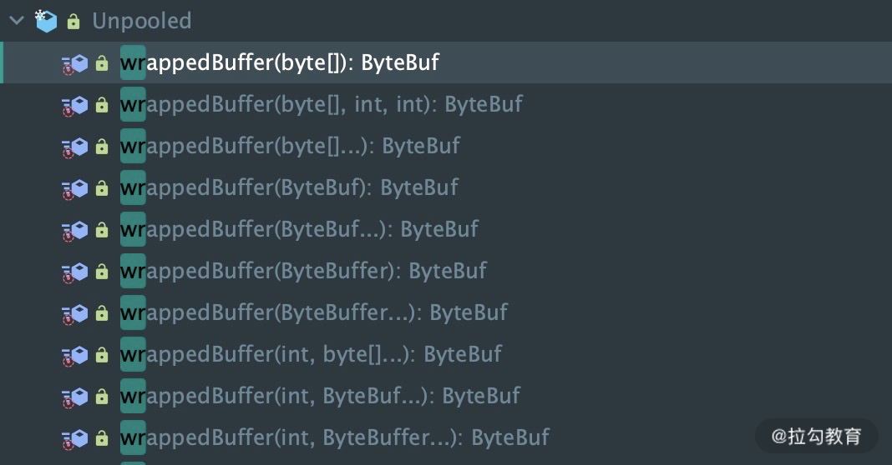

- 00 学好 Netty，是你修炼 Java 内功的必经之路.md.html
- 01 初识 Netty：为什么 Netty 这么流行？.md.html
- 02 纵览全局：把握 Netty 整体架构脉络.md.html
- 03 引导器作用：客户端和服务端启动都要做些什么？.md.html
- 04 事件调度层：为什么 EventLoop 是 Netty 的精髓？.md.html
- 05 服务编排层：Pipeline 如何协调各类 Handler ？.md.html
- 06 粘包拆包问题：如何获取一个完整的网络包？.md.html
- 07 接头暗语：如何利用 Netty 实现自定义协议通信？.md.html
- 08 开箱即用：Netty 支持哪些常用的解码器？.md.html
- 09 数据传输：writeAndFlush 处理流程剖析.md.html
- 10 双刃剑：合理管理 Netty 堆外内存.md.html
- 11 另起炉灶：Netty 数据传输载体 ByteBuf 详解.md.html
- 12 他山之石：高性能内存分配器 jemalloc 基本原理.md.html
- 13 举一反三：Netty 高性能内存管理设计（上）.md.html
- 14 举一反三：Netty 高性能内存管理设计（下）.md.html
- 15 轻量级对象回收站：Recycler 对象池技术解析.md.html
- 16 IO 加速：与众不同的 Netty 零拷贝技术.md.html
- 17 源码篇：从 Linux 出发深入剖析服务端启动流程.md.html
- 18 源码篇：解密 Netty Reactor 线程模型.md.html
- 19 源码篇：一个网络请求在 Netty 中的旅程.md.html
- 20 技巧篇：Netty 的 FastThreadLocal 究竟比 ThreadLocal 快在哪儿？.md.html
- 21 技巧篇：延迟任务处理神器之时间轮 HashedWheelTimer.md.html
- 22 技巧篇：高性能无锁队列 Mpsc Queue.md.html
- 23 架构设计：如何实现一个高性能分布式 RPC 框架.md.html
- 24 服务发布与订阅：搭建生产者和消费者的基础框架.md.html
- 25 远程通信：通信协议设计以及编解码的实现.md.html
- 26 服务治理：服务发现与负载均衡机制的实现.md.html
- 27 动态代理：为用户屏蔽 RPC 调用的底层细节.md.html
- 28 实战总结：RPC 实战总结与进阶延伸.md.html
- 29 编程思想：Netty 中应用了哪些设计模式？.md.html
- 30 实践总结：Netty 在项目开发中的一些最佳实践.md.html
- 31 结束语 技术成长之路：如何打造自己的技术体系.md.html
- 捐赠
16 IO 加速：与众不同的 Netty 零拷贝技术
今天的课程我们继续讨论 Netty 实现高性能的另一个高阶特性——零拷贝。零拷贝是一个耳熟能详的词语，在 Linux、Kafka、RocketMQ 等知名的产品中都有使用，通常用于提升 I/O 性能。而且零拷贝也是面试过程中的高频问题，那么你知道零拷贝体现在哪些地方吗？Netty 的零拷贝技术又是如何实现的呢？接下来我们就针对 Netty 零拷贝特性进行详细地分析。
传统 Linux 中的零拷贝技术
在介绍 Netty 零拷贝特性之前，我们有必要学习下传统 Linux 中零拷贝的工作原理。所谓零拷贝，就是在数据操作时，不需要将数据从一个内存位置拷贝到另外一个内存位置，这样可以减少一次内存拷贝的损耗，从而节省了 CPU 时钟周期和内存带宽。
我们模拟一个场景，从文件中读取数据，然后将数据传输到网络上，那么传统的数据拷贝过程会分为哪几个阶段呢？具体如下图所示。

从上图中可以看出，从数据读取到发送一共经历了四次数据拷贝，具体流程如下：
- 当用户进程发起 read() 调用后，上下文从用户态切换至内核态。DMA 引擎从文件中读取数据，并存储到内核态缓冲区，这里是第一次数据拷贝。
- 请求的数据从内核态缓冲区拷贝到用户态缓冲区，然后返回给用户进程。第二次数据拷贝的过程同时，会导致上下文从内核态再次切换到用户态。
- 用户进程调用 send() 方法期望将数据发送到网络中，此时会触发第三次线程切换，用户态会再次切换到内核态，请求的数据从用户态缓冲区被拷贝到 Socket 缓冲区。
- 最终 send() 系统调用结束返回给用户进程，发生了第四次上下文切换。第四次拷贝会异步执行，从 Socket 缓冲区拷贝到协议引擎中。
说明：DMA（Direct Memory Access，直接内存存取）是现代大部分硬盘都支持的特性，DMA 接管了数据读写的工作，不需要 CPU 再参与 I/O 中断的处理，从而减轻了 CPU 的负担。
传统的数据拷贝过程为什么不是将数据直接传输到用户缓冲区呢？其实引入内核缓冲区可以充当缓存的作用，这样就可以实现文件数据的预读，提升 I/O 的性能。但是当请求数据量大于内核缓冲区大小时，在完成一次数据的读取到发送可能要经历数倍次数的数据拷贝，这就造成严重的性能损耗。
接下来我们介绍下使用零拷贝技术之后数据传输的流程。重新回顾一遍传统数据拷贝的过程，可以发现第二次和第三次拷贝是可以去除的，DMA 引擎从文件读取数据后放入到内核缓冲区，然后可以直接从内核缓冲区传输到 Socket 缓冲区，从而减少内存拷贝的次数。
在 Linux 中系统调用 sendfile() 可以实现将数据从一个文件描述符传输到另一个文件描述符，从而实现了零拷贝技术。在 Java 中也使用了零拷贝技术，它就是 NIO FileChannel 类中的 transferTo() 方法，transferTo() 底层就依赖了操作系统零拷贝的机制，它可以将数据从 FileChannel 直接传输到另外一个 Channel。transferTo() 方法的定义如下：
public abstract long transferTo(long position, long count, WritableByteChannel target) throws IOException;
FileChannel#transferTo() 的使用也非常简单，我们直接看如下的代码示例，通过 transferTo() 将 from.data 传输到 to.data()，等于实现了文件拷贝的功能。
public void testTransferTo() throws IOException {
RandomAccessFile fromFile = new RandomAccessFile("from.data", "rw");
FileChannel fromChannel = fromFile.getChannel();
RandomAccessFile toFile = new RandomAccessFile("to.data", "rw");
FileChannel toChannel = toFile.getChannel();
long position = 0;
long count = fromChannel.size();
fromChannel.transferTo(position, count, toChannel);
}
在使用了 FileChannel#transferTo() 传输数据之后，我们看下数据拷贝流程发生了哪些变化，如下图所示：

比较大的一个变化是，DMA 引擎从文件中读取数据拷贝到内核态缓冲区之后，由操作系统直接拷贝到 Socket 缓冲区，不再拷贝到用户态缓冲区，所以数据拷贝的次数从之前的 4 次减少到 3 次。
但是上述的优化离达到零拷贝的要求还是有差距的，能否继续减少内核中的数据拷贝次数呢？在 Linux 2.4 版本之后，开发者对 Socket Buffer 追加一些 Descriptor 信息来进一步减少内核数据的复制。如下图所示，DMA 引擎读取文件内容并拷贝到内核缓冲区，然后并没有再拷贝到 Socket 缓冲区，只是将数据的长度以及位置信息被追加到 Socket 缓冲区，然后 DMA 引擎根据这些描述信息，直接从内核缓冲区读取数据并传输到协议引擎中，从而消除最后一次 CPU 拷贝。

通过上述 Linux 零拷贝技术的介绍，你也许还会存在疑问，最终使用零拷贝之后，不是还存在着数据拷贝操作吗？其实从 Linux 操作系统的角度来说，零拷贝就是为了避免用户态和内存态之间的数据拷贝。无论是传统的数据拷贝还是使用零拷贝技术，其中有 2 次 DMA 的数据拷贝必不可少，只是这 2 次 DMA 拷贝都是依赖硬件来完成，不需要 CPU 参与。所以，在这里我们讨论的零拷贝是个广义的概念，只要能够减少不必要的 CPU 拷贝，都可以被称为零拷贝。
Netty 的零拷贝技术
介绍完传统 Linux 的零拷贝技术之后，我们再来学习下 Netty 中的零拷贝如何实现。Netty 中的零拷贝和传统 Linux 的零拷贝不太一样。Netty 中的零拷贝技术除了操作系统级别的功能封装，更多的是面向用户态的数据操作优化，主要体现在以下 5 个方面：
- 堆外内存，避免 JVM 堆内存到堆外内存的数据拷贝。
- CompositeByteBuf 类，可以组合多个 Buffer 对象合并成一个逻辑上的对象，避免通过传统内存拷贝的方式将几个 Buffer 合并成一个大的 Buffer。
- 通过 Unpooled.wrappedBuffer 可以将 byte 数组包装成 ByteBuf 对象，包装过程中不会产生内存拷贝。
- ByteBuf.slice 操作与 Unpooled.wrappedBuffer 相反，slice 操作可以将一个 ByteBuf 对象切分成多个 ByteBuf 对象，切分过程中不会产生内存拷贝，底层共享一个 byte 数组的存储空间。
- Netty 使用 FileRegion 实现文件传输，FileRegion 底层封装了 FileChannel#transferTo() 方法，可以将文件缓冲区的数据直接传输到目标 Channel，避免内核缓冲区和用户态缓冲区之间的数据拷贝，这属于操作系统级别的零拷贝。
下面我们从以上 5 个方面逐一进行介绍。
堆外内存
如果在 JVM 内部执行 I/O 操作时，必须将数据拷贝到堆外内存，才能执行系统调用。这是所有 VM 语言都会存在的问题。那么为什么操作系统不能直接使用 JVM 堆内存进行 I/O 的读写呢？主要有两点原因：第一，操作系统并不感知 JVM 的堆内存，而且 JVM 的内存布局与操作系统所分配的是不一样的，操作系统并不会按照 JVM 的行为来读写数据。第二，同一个对象的内存地址随着 JVM GC 的执行可能会随时发生变化，例如 JVM GC 的过程中会通过压缩来减少内存碎片，这就涉及对象移动的问题了。
Netty 在进行 I/O 操作时都是使用的堆外内存，可以避免数据从 JVM 堆内存到堆外内存的拷贝。
CompositeByteBuf
CompositeByteBuf 是 Netty 中实现零拷贝机制非常重要的一个数据结构，CompositeByteBuf 可以理解为一个虚拟的 Buffer 对象，它是由多个 ByteBuf 组合而成，但是在 CompositeByteBuf 内部保存着每个 ByteBuf 的引用关系，从逻辑上构成一个整体。比较常见的像 HTTP 协议数据可以分为头部信息 header和消息体数据 body，分别存在两个不同的 ByteBuf 中，通常我们需要将两个 ByteBuf 合并成一个完整的协议数据进行发送，可以使用如下方式完成：
ByteBuf httpBuf = Unpooled.buffer(header.readableBytes() + body.readableBytes());
httpBuf.writeBytes(header);
httpBuf.writeBytes(body);
可以看出，如果想实现 header 和 body 这两个 ByteBuf 的合并，需要先初始化一个新的 httpBuf，然后再将 header 和 body 分别拷贝到新的 httpBuf。合并过程中涉及两次 CPU 拷贝，这非常浪费性能。如果使用 CompositeByteBuf 如何实现类似的需求呢？如下所示：
CompositeByteBuf httpBuf = Unpooled.compositeBuffer();
httpBuf.addComponents(true, header, body);
CompositeByteBuf 通过调用 addComponents() 方法来添加多个 ByteBuf，但是底层的 byte 数组是复用的，不会发生内存拷贝。但对于用户来说，它可以当作一个整体进行操作。那么 CompositeByteBuf 内部是如何存放这些 ByteBuf，并且如何进行合并的呢？我们先通过一张图看下 CompositeByteBuf 的内部结构：

从图上可以看出，CompositeByteBuf 内部维护了一个 Components 数组。在每个 Component 中存放着不同的 ByteBuf，各个 ByteBuf 独立维护自己的读写索引，而 CompositeByteBuf 自身也会单独维护一个读写索引。由此可见，Component 是实现 CompositeByteBuf 的关键所在，下面看下 Component 结构定义：
private static final class Component {
final ByteBuf srcBuf; // 原始的 ByteBuf
final ByteBuf buf; // srcBuf 去除包装之后的 ByteBuf
int srcAdjustment; // CompositeByteBuf 的起始索引相对于 srcBuf 读索引的偏移
int adjustment; // CompositeByteBuf 的起始索引相对于 buf 的读索引的偏移
int offset; // Component 相对于 CompositeByteBuf 的起始索引位置
int endOffset; // Component 相对于 CompositeByteBuf 的结束索引位置
// 省略其他代码
}
为了方便理解上述 Component 中的属性含义，我同样以 HTTP 协议中 header 和 body 为示例，通过一张图来描述 CompositeByteBuf 组合后其中 Component 的布局情况，如下所示：

从图中可以看出，header 和 body 分别对应两个 ByteBuf，假设 ByteBuf 的内容分别为 “header” 和 “body”，那么 header ByteBuf 中 offset~endOffset 为 0~6，body ByteBuf 对应的 offset~endOffset 为 0~10。由此可见，Component 中的 offset 和 endOffset 可以表示当前 ByteBuf 可以读取的范围，通过 offset 和 endOffset 可以将每一个 Component 所对应的 ByteBuf 连接起来，形成一个逻辑整体。
此外 Component 中 srcAdjustment 和 adjustment 表示 CompositeByteBuf 起始索引相对于 ByteBuf 读索引的偏移。初始 adjustment = readIndex - offset，这样通过 CompositeByteBuf 的起始索引就可以直接定位到 Component 中 ByteBuf 的读索引位置。当 header ByteBuf 读取 1 个字节，body ByteBuf 读取 2 个字节，此时每个 Component 的属性又会发生什么变化呢？如下图所示。

至此，CompositeByteBuf 的基本原理我们已经介绍完了，关于具体 CompositeByteBuf 数据操作的细节在这里就不做展开了，有兴趣的同学可以自己深入研究 CompositeByteBuf 的源码。
Unpooled.wrappedBuffer 操作
介绍完 CompositeByteBuf 之后，再来理解 Unpooled.wrappedBuffer 操作就非常容易了，Unpooled.wrappedBuffer 同时也是创建 CompositeByteBuf 对象的另一种推荐做法。
Unpooled 提供了一系列用于包装数据源的 wrappedBuffer 方法，如下所示：

Unpooled.wrappedBuffer 方法可以将不同的数据源的一个或者多个数据包装成一个大的 ByteBuf 对象，其中数据源的类型包括 byte[]、ByteBuf、ByteBuffer。包装的过程中不会发生数据拷贝操作，包装后生成的 ByteBuf 对象和原始 ByteBuf 对象是共享底层的 byte 数组。
ByteBuf.slice 操作
ByteBuf.slice 和 Unpooled.wrappedBuffer 的逻辑正好相反，ByteBuf.slice 是将一个 ByteBuf 对象切分成多个共享同一个底层存储的 ByteBuf 对象。
ByteBuf 提供了两个 slice 切分方法:
public ByteBuf slice();
public ByteBuf slice(int index, int length);
假设我们已经有一份完整的 HTTP 数据，可以通过 slice 方法切分获得 header 和 body 两个 ByteBuf 对象，对应的内容分别为 “header” 和 “body”，实现方式如下：
ByteBuf httpBuf = ...
ByteBuf header = httpBuf.slice(0, 6);
ByteBuf body = httpBuf.slice(6, 4);
通过 slice 切分后都会返回一个新的 ByteBuf 对象，而且新的对象有自己独立的 readerIndex、writerIndex 索引，如下图所示。由于新的 ByteBuf 对象与原始的 ByteBuf 对象数据是共享的，所以通过新的 ByteBuf 对象进行数据操作也会对原始 ByteBuf 对象生效。

文件传输 FileRegion
在 Netty 源码的 example 包中，提供了 FileRegion 的使用示例，以下代码片段摘自 FileServerHandler.java。
@Override
public void channelRead0(ChannelHandlerContext ctx, String msg) throws Exception {
RandomAccessFile raf = null;
long length = -1;
try {
raf = new RandomAccessFile(msg, "r");
length = raf.length();
} catch (Exception e) {
ctx.writeAndFlush("ERR: " + e.getClass().getSimpleName() + ": " + e.getMessage() + '\n');
return;
} finally {
if (length < 0 && raf != null) {
raf.close();
}
}
ctx.write("OK: " + raf.length() + '\n');
if (ctx.pipeline().get(SslHandler.class) == null) {
// SSL not enabled - can use zero-copy file transfer.
ctx.write(new DefaultFileRegion(raf.getChannel(), 0, length));
} else {
// SSL enabled - cannot use zero-copy file transfer.
ctx.write(new ChunkedFile(raf));
}
ctx.writeAndFlush("\n");
}
从 FileRegion 的使用示例可以看出，Netty 使用 FileRegion 实现文件传输的零拷贝。FileRegion 的默认实现类是 DefaultFileRegion，通过 DefaultFileRegion 将文件内容写入到 NioSocketChannel。那么 FileRegion 是如何实现零拷贝的呢？我们通过源码看看 FileRegion 到底使用了什么黑科技。
public class DefaultFileRegion extends AbstractReferenceCounted implements FileRegion {
private final File f; // 传输的文件
private final long position; // 文件的起始位置
private final long count; // 传输的字节数
private long transferred; // 已经写入的字节数
private FileChannel file; // 文件对应的 FileChannel
@Override
public long transferTo(WritableByteChannel target, long position) throws IOException {
long count = this.count - position;
if (count < 0 || position < 0) {
throw new IllegalArgumentException(
"position out of range: " + position +
" (expected: 0 - " + (this.count - 1) + ')');
}
if (count == 0) {
return 0L;
}
if (refCnt() == 0) {
throw new IllegalReferenceCountException(0);
}
open();
long written = file.transferTo(this.position + position, count, target);
if (written > 0) {
transferred += written;
} else if (written == 0) {
validate(this, position);
}
return written;
}
// 省略其他代码
}
从源码可以看出，FileRegion 其实就是对 FileChannel 的包装，并没有什么特殊操作，底层使用的是 JDK NIO 中的 FileChannel#transferTo() 方法实现文件传输，所以 FileRegion 是操作系统级别的零拷贝，对于传输大文件会很有帮助。
到此为止，Netty 相关的零拷贝技术都已经介绍完了，可以看出 Netty 对于 ByteBuf 做了更多精进的设计和优化。
总结
零拷贝是网络编程中一种常用的技术，可以用于优化网络数据传输的性能。本文介绍了操作系统 Linux 和 Netty 中的零拷贝技术，Netty 除了支持操作系统级别的零拷贝，更多提供了面向用户态的零拷贝特性，主要体现在 5 个方面：堆外内存、CompositeByteBuf、Unpooled.wrappedBuffer、ByteBuf.slice 以及 FileRegion。以操作系统的角度来看，零拷贝是一个广义的概念，可以认为只要能够减少不必要的 CPU 拷贝，都可以理解为是零拷贝。
最后，留一个思考题，使用具备零拷贝特性的 transfer() 方法拷贝文件，一定会比传统 I/O 的方式更高效吗？
© 2019 - 2023 Liangliang Lee. Powered by gin and hexo-theme-book.